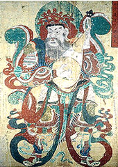

|
|
Newswww.chinese-art.com
This website is an excellent source for surveying and understanding the main trends in Chinese contemporary art, offering exhibition reviews, critical essays, interviews with leading artists and links to galleries around the world. |
British Museum For more information about Asia see the following Education pages Religion Islam Arab World or other departments in the museum Department of Oriental Antiquities Department of Japanese Antiquities Department of Coins and Medals Department of the Ancient Near East Department of Ethnography Here some other sites outside the museum which are also of interest:
The Asia Society
The British Library
The Commonwealth Institute
Japan Festival Education Trust
The Metropolitan Museum of Art, New York
Museum of East Asian Art, Bath
Royal Asiatic Society
Sainsbury Institute for the Study of Japanese Arts and Cultures
School of Oriental and African Studies
Percival David Foundation
Victoria and Albert Museum
The Hindu Universe
Political and Social Ethics of India
Indian History Sourcebook
History of India on the Web
|
 Dhratarastra, Guardian King of the East, Korea, painting on hemp cloth, Choson dynasty, late 18th early 19th century AD. |
|||
|
home |
visit |
what's on |
join |
shop |
learning |
COMPASS |
world cultures |
sitemap |
contact us |
copyright
© The British Museum, 2002 |
|||||